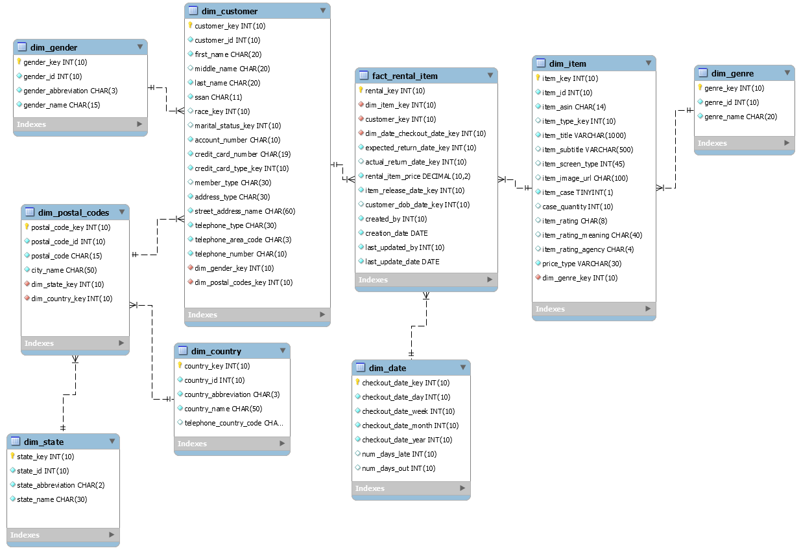

auto header
page title
paper title
Snowflake Schema Model

Sample snowflake schema ERD model image, made in MySQL Workbench by Doris Rush-Lopez
Sources:
Kimball, Ralph "Keep to the Grain in Dimensional Modeling", Kimball Group
Kimball, Ralph "Declaring the Grain", Kimball Group
"Data Grain: What’s the Right Level of Granularity When Building Data Models", Mozart Data
"06 Understanding Granularity", Data Warehouse channel on YouTube